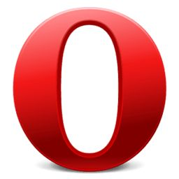

Google Chrome使用最广的浏览器
Google Chrome,又称Google浏览器,是一个由Google(谷歌)公司开发的网页浏览器。该浏览器是基于其他开源软件所撰写，包括Webkit，目标是提升稳定性、速度和安全性,并创造出简单有效的使用者界面。
Mozilla Firefox美丽的狐狸
Mozilla Firefox,中文名通常称为"火狐"或"火狐浏览器",是一个开源网络浏览器。使用Gecko引擎(非IE内核),支持多种操作系统如Windows、Mac和Linux。
SafariMac用户首选
Safari,是苹果计算机的最新操作系统,Mac OS X中的浏览器,使用了KDE的KHTME作为浏览器的运算核心。Safari在2003年1月7日首度发行测试版,并成为Mac OS X v10.3与之后的默认浏览器，也是iphone与iPad和iPod touch的指定浏览器。

Opera小众但易用
Opera浏览器,是一款挪威Opera Software ASA公司制作的支持多页面标签式浏览的网络浏览器。是跨平台浏览器可以再Windows、Mac和Linux三个操作系统平台上运行。
IE你懂的
Internet Explorer,原称Microsoft Internet Explorer(6版本以前)和Windows Internet Explorer(7,8,9,10版本),简称IE,是美国微软公司推出的一款网页浏览器。它采用的排版引擎(俗称内核)为Trident。